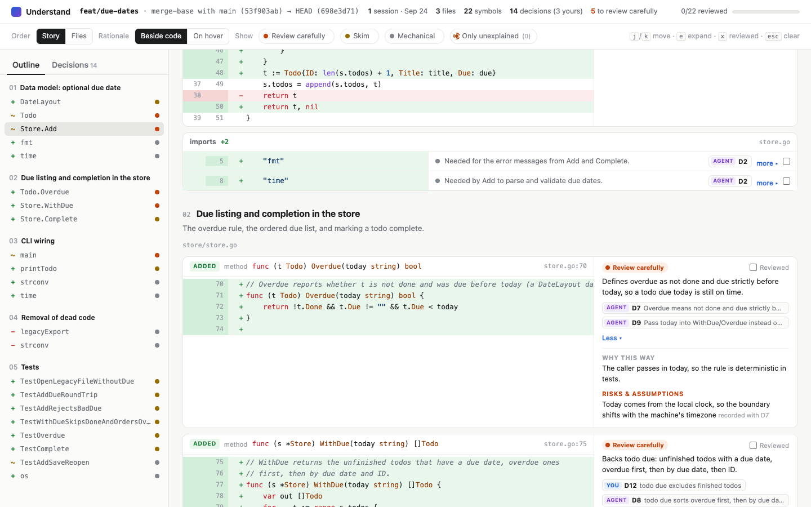

Understand keeps a decision log while a coding agent works. When you review, it explains every changed import, function, and class next to its diff, and shows you plainly where the explanation has gaps.

A real page from a real session: an agent adding due dates to a small Go app over three turns, then opening a pull request.
Install it once. Nothing to invoke, nothing to remember.
As it works, the agent records each choice: what it decided, why, what it rejected, and which functions and imports it shaped. Hooks capture every change it makes.
A pull request, the whole branch, what's staged, uncommitted changes, or any commits. Opening a PR prompts the page automatically.
Read changes in the order that tells the story, see which ones deserve a careful look, and focus on one decision to see everything it touched.
A plausible story written afterwards is worse than a visible gap. So the page never fills one in.
Every decision records whether it was your call or the agent's, captured when it was made.
Each changed line is traced to the tool call that wrote it. Edits you made by hand, side effects, and changes nobody explained are flagged, line by line.
A decision covers the symbols it names, even through renames. Nothing written later can clear a flag.
Decisions are committed to .decisions/ alongside the agent's commits, so anyone can rebuild the page, and future agents can learn why the code is the way it is.
Works with Claude Code and the Codex CLI. Needs Node 20+ and git.
claude plugin marketplace add ibdafna/understand
claude plugin install understand@understandcodex plugin marketplace add ibdafna/understand
codex plugin add understand@understandThen open /hooks in Codex and trust Understand's hooks.
Both pages were produced by the plugin in live sessions, unedited.